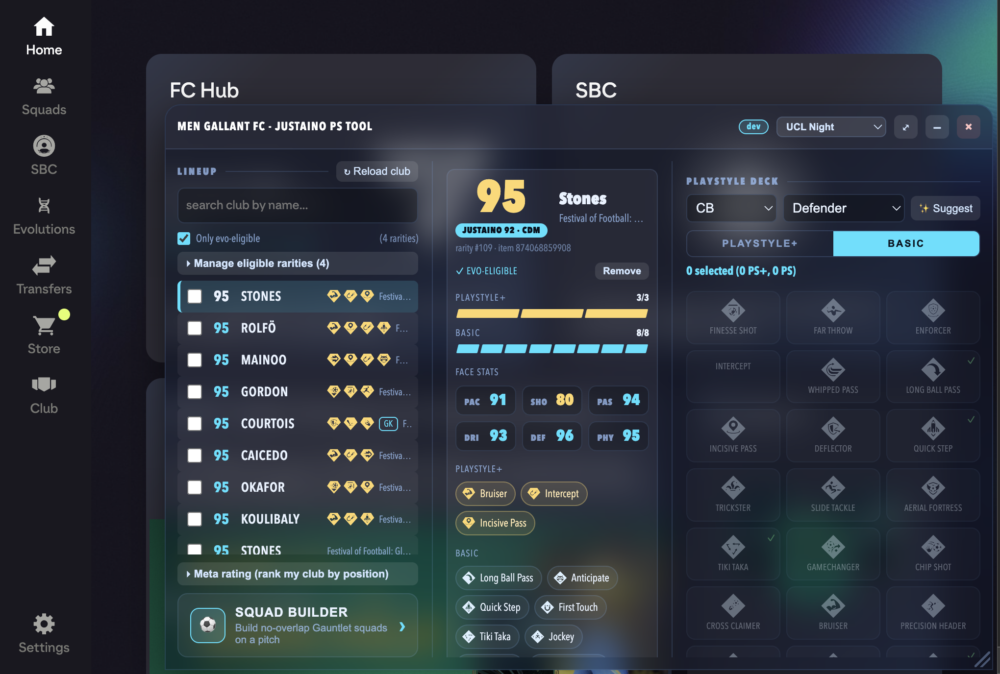
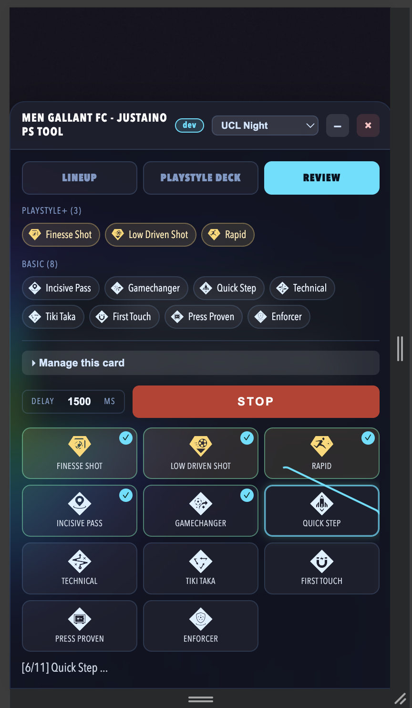
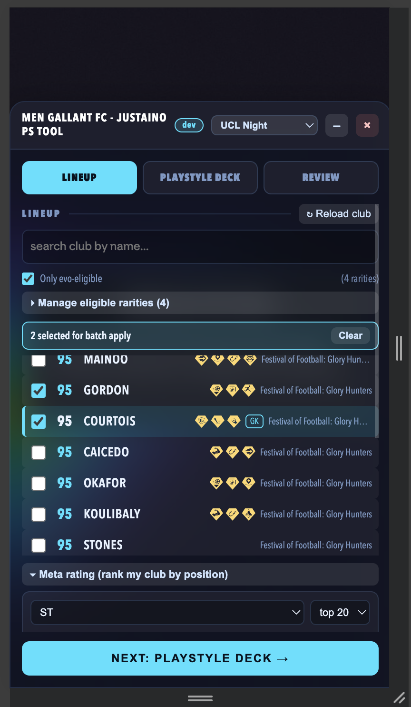
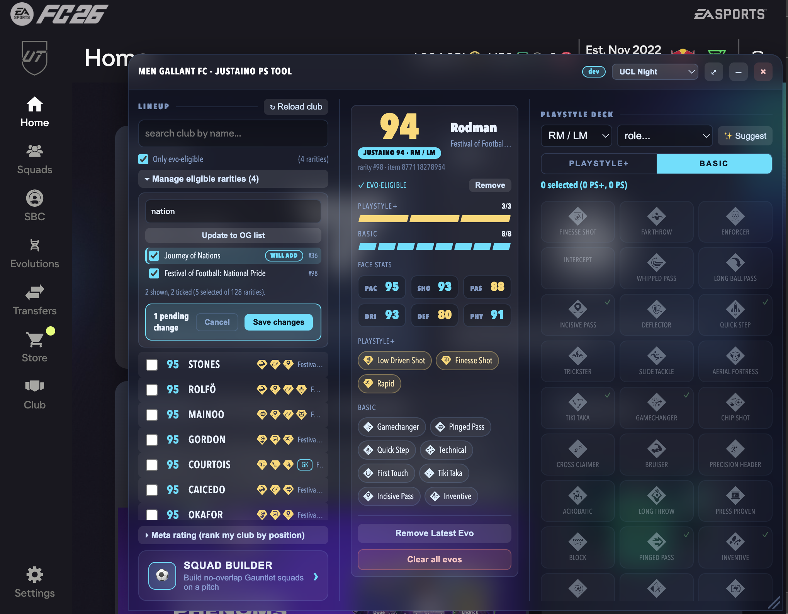
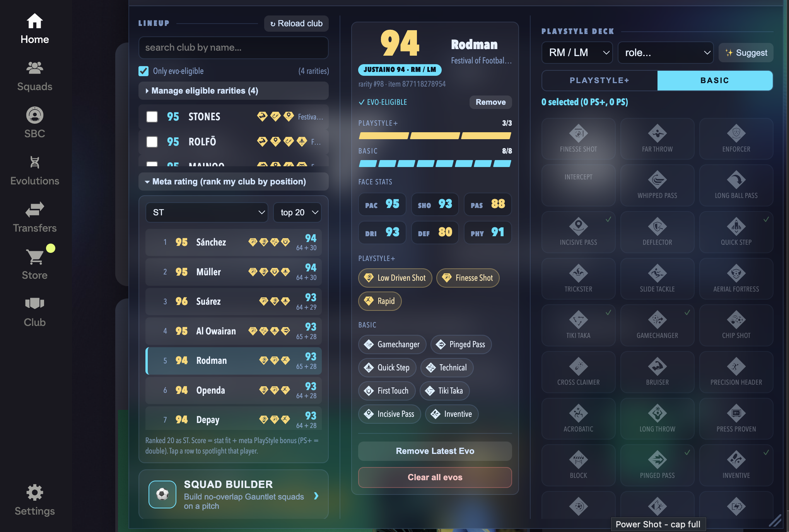
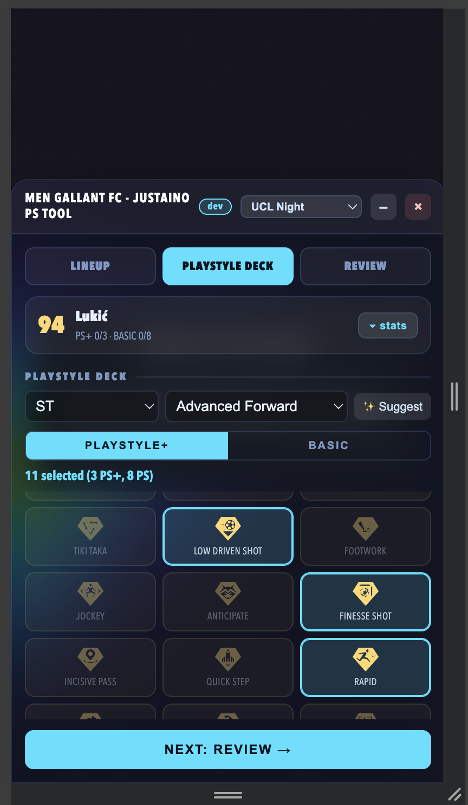
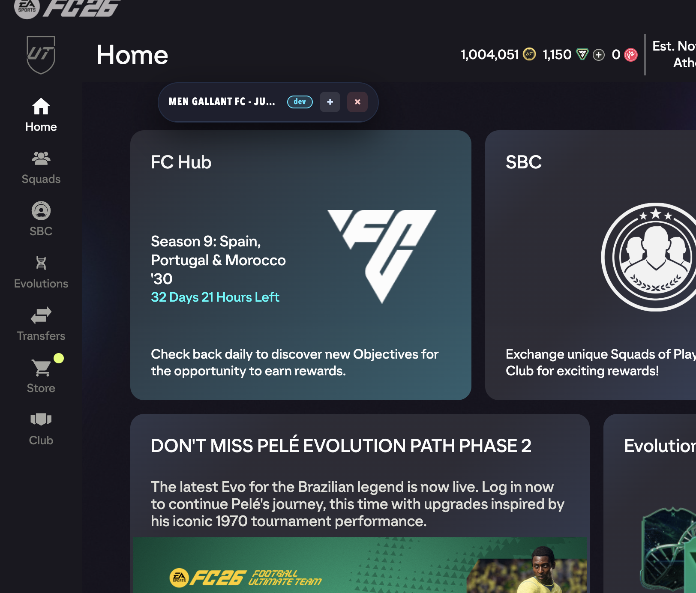

A floating panel for the EA FC 26 Web App that turns evolving your club into a
couple of clicks - pick a player, tick the PlayStyles you want, and apply them
all at once. It also ranks your club by position, manages your evolutions, and
builds full Gauntlet squads on a pitch. Built for Men Gallant FC.
🔒It runs entirely inside your own logged-in Web App session - it drives the
game's own buttons and services. No passwords, no servers, nothing faked.
It's a personal tool, not a hack.

The whole thing, one panel
Your entire club, at a glance
Loads every playerin your club - not just your active squad - with instant search by name and a one-tap reload.
A preview card for the picked playershows rating, rarity and positions, plus capacity “pips” for your 3 PlayStyle+ / 8 basic slots and the styles it already has as icon chips.
Only evo-eligible- a single toggle hides cards that can't take evos, and it learns which rarities work as you go.

Pick smart, apply in one go
Smart Suggest & one-click apply
✨ Suggestpicks the recommended PlayStyles for a chosen position and role (best ones as PlayStyle+). If the player already owns a top pick, it falls through to the next best so every slot gets filled.
Apply them all at once- each tile spins then ticks as it lands, with a live “6/11” counter and a summary at the end.
You stay in control- set a delay between applies, and hit Stop at any time. Owned styles and caps are respected automatically.
No page reload- the card refreshes itself the moment a style lands.

Do the whole squad
Apply to many players at once
Tick several playersand apply the same set of PlayStyles to all of them in a single run.
A clear roll-callshows exactly who's included before you commit.
Each player is checked on its own- anything already owned, full, or not allowed on that card is reported as skipped, not a failure, in a tidy per-player breakdown.

Change your mind? No problem
Manage, undo & fine-tune eligibility
Remove Latest Evopeels off the most recent upgrade,Clear all evosrolls a card all the way back - both ask you to confirm first and show live progress.
Manage eligible rarities- search, tick and save exactly which card types the “Only evo-eligible” filter trusts, then “Update to OG list” to lock in your set.
A friendly summaryafter every run: “Added 11 to Lukić”, with the full list of what went on.

My own player rating
The Justaino Rating
A 0-100 score per positionworked out from each player's real stats and PlayStyles - shown as a pill on the preview card and as a rankable list.
Rank your whole club for a position- pick ST, CB, GK and so on, and see your best options in order, with the stat / PlayStyle split behind each score.
PlayStyles matter, a lot- 30% of the score is locked behind meta PlayStyles (PlayStyle+ counts double), so a lower-rated card with the right styles can outrank a shinier one.
No-overlap Gauntlet squads- ask for 3, 4 or 5 squads and it splits your club so no player is used twice, then lays each one out on a full pitch.
Pick any formation- choose from the game's own formation list, and it places every player in the right slot with their best rating on show.
Create them in the game- one “Create in game” button builds the lot for real (loan and timed players left out), and “Remove Gauntlet squads” cleans them up again.

Wherever you play
Made for desktop and phone
On a computerit's a three-pane console you can drag around and resize to taste.
On a phoneit becomes a simple step-by-step wizard - Lineup → PlayStyle Deck → Review - so it's easy to use one-handed.
A frosted-glass lookthat sits neatly over the Web App, on either screen.

Never blocks your view
Tuck it away, in your colours
Minimise anytimeand the whole panel collapses to a small pill, so it never gets in the way of the game. Tap the + to bring it back or the × to close it.
Pick a theme- a dropdown in the header switches the whole panel's colours (Prime Teal, UCL Night and more) to suit your mood.
Great on mobile too- shrink it out of sight to see the full screen, then bring it straight back when you need it.
Ready to try it?
Install the bookmarklet once, then click it whenever you're on the FC 26 Web App.